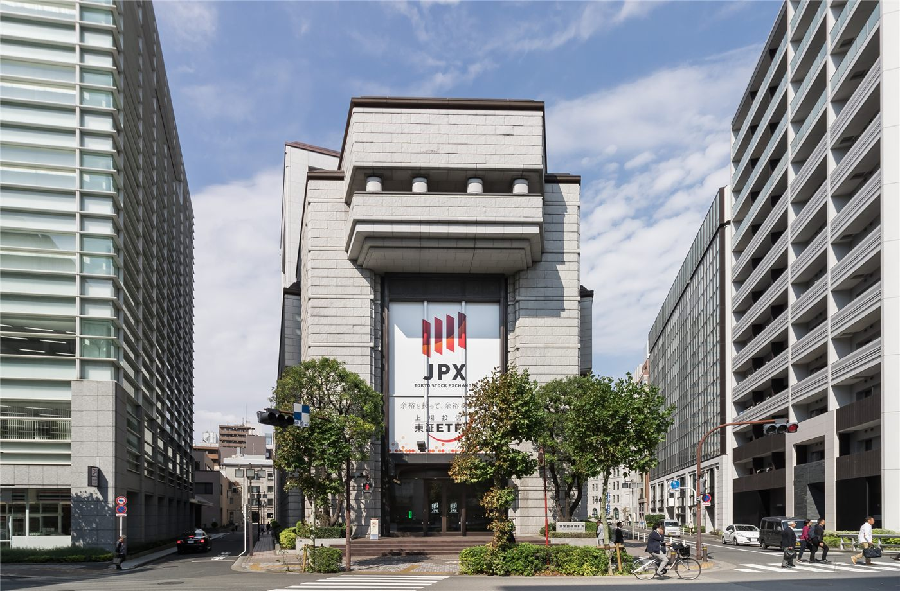

환구 라운드 테이블: 일본 경제, '블랙 스완·회색 코뿔소' 협공 벗어날까
일본 경제가 예측 불가능한 충격(블랙 스완)과 알면서도 방치한 위험(회색 코뿔소)의 협공에서 벗어날 수 있을지 전문가들의 진단이 나왔다.
양념자 기자 · 2026.06.19
橋국제

환구망은 라운드 테이블 대화에서 일본 경제가 '블랙 스완'과 '회색 코뿔소'의 동시 압박 속에서 활로를 찾을 수 있을지를 다뤘다. 인구 고령화와 부채, 대외 환경 변화가 핵심 변수로 거론됐다.
광고 문의 · 300×250두 가지 위험의 협공
블랙 스완은 갑작스러운 외부 충격을, 회색 코뿔소는 뻔히 보이면서도 손대지 못한 구조적 위험을 뜻한다. 일본의 경우 고령화·재정 부담·생산성 정체가 회색 코뿔소로, 글로벌 금융·지정학 변동이 블랙 스완으로 꼽힌다.
전문가들은 일본이 임금 상승과 내수 회복, 기술 투자로 활로를 모색하고 있다고 분석했다. 다만 구조적 과제를 풀지 못하면 회복의 지속성이 제한될 수 있다는 신중론도 함께 제시됐다.
華橋時報는 이웃 경제 일본의 진단을 한국·화인 사회의 참고점으로 본다. 정책·경제 흐름을 중립적으로 전하며, 특정 전망을 단정하지 않는다.
출처·참고 (사실 확인용 — 본문은 직접 재작성)
· 환구망(環球網) 環球圓桌對話 2026.06.18 '日本經濟能否擺脫黑天鵝灰犀牛夾擊'
· 환구망(環球網) 環球圓桌對話 2026.06.18 '日本經濟能否擺脫黑天鵝灰犀牛夾擊'